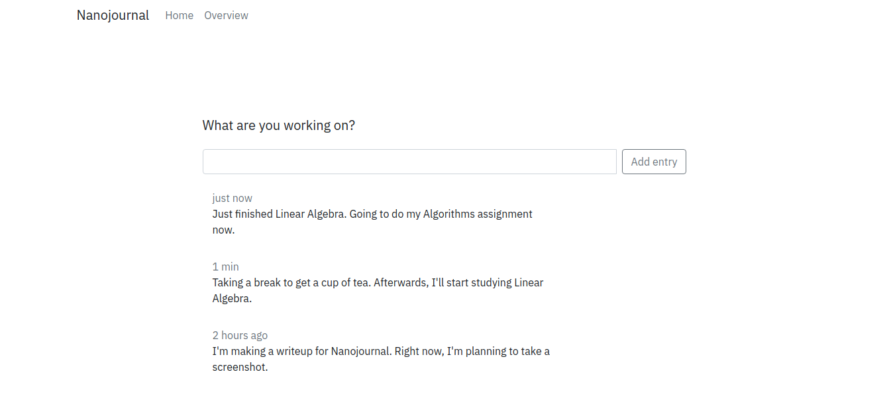

Today more than ever, our focus is being pulled in all directions. Even as you use your phone or desktop, you can quickly switch to any other application or app at any time. This means that our ability to have a singular focus has atrophied and we must fight to reclaim it.
Nanojournal was inspired by a method called interstitial journalling. In interstitial journalling, whenever you find yourself about to switch task, you need to write down what you just did, and what you hope to accomplish in the next few minutes. This helps focus your intentions so that you loose less time to pleasant distractions and detours.

Dashboard
Technical details
This is my first project fully in JS, as part of my attempt to transition to greener pastures. I built it using Express.js and wrote a barebones backend and frontend in order to get an MVP of the project up and running as soon as possible.